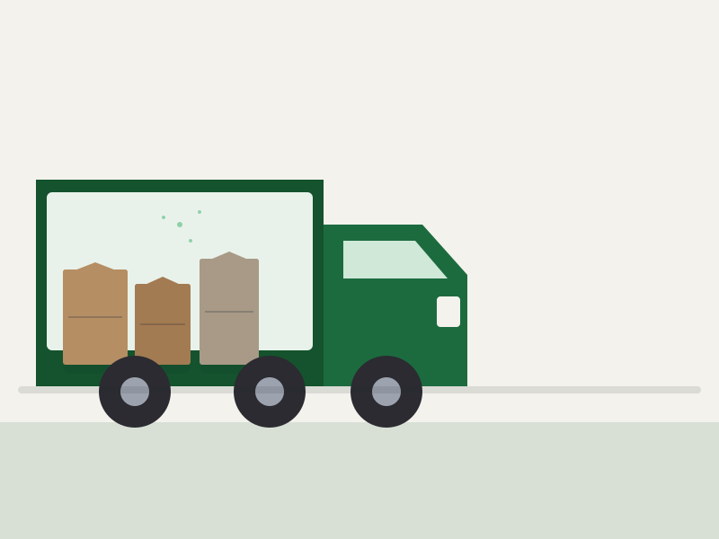

Débarras urgent à Strasbourg et en Alsace
Il y a des situations où attendre une semaine n'est pas possible : dégât des eaux, logement à libérer immédiatement, sinistre, restitution de clés le lendemain.

Il y a des situations où attendre une semaine n'est pas possible : dégât des eaux, logement à libérer immédiatement, sinistre, restitution de clés le lendemain. Nous ne promettons pas d'intervenir en une heure partout : nous regardons nos créneaux réels et nous vous répondons honnêtement sur ce qui est faisable.
Votre situation
- Le logement doit être vidé dans les 24 à 72 heures.
- Un sinistre (dégât des eaux, incendie) impose d'évacuer rapidement.
- Un rendez-vous immanquable (état des lieux, remise des clés) impose une date.
Comment nous y répondons
- Traitement prioritaire de la demande dès réception.
- Estimation rapide par téléphone et photos, sans attendre une visite.
- Mobilisation d'une équipe dédiée si un créneau est disponible.
- En cas d'impossibilité, nous vous le disons tout de suite pour que vous puissiez chercher une alternative.
Questions fréquentes
Garantissez-vous une intervention en 24 h ?
Non, personne ne peut le garantir sérieusement. En revanche, les demandes urgentes sont examinées immédiatement et nous vous répondons sur ce qui est réellement possible.
Que dois-je préparer pour gagner du temps ?
Quelques photos, l'adresse exacte, l'étage et l'accès, et ce qui doit impérativement être conservé. C'est suffisant pour chiffrer rapidement.
Demander un devis
Décrivez la situation en quelques étapes : nous vous répondons sur ce qui est réellement possible.
Demander un devis gratuit Appeler le 04 13 24 56 78 WhatsAppPrestations adaptées
Cette situation vous parle ?
Décrivez-la en quelques étapes, ajoutez des photos si vous en avez : nous vous dirons ce qui est faisable et à quel délai.